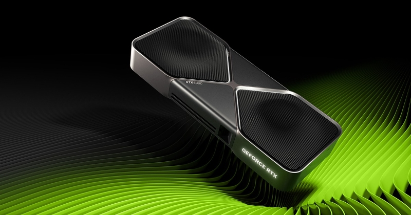
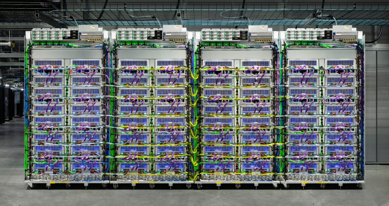
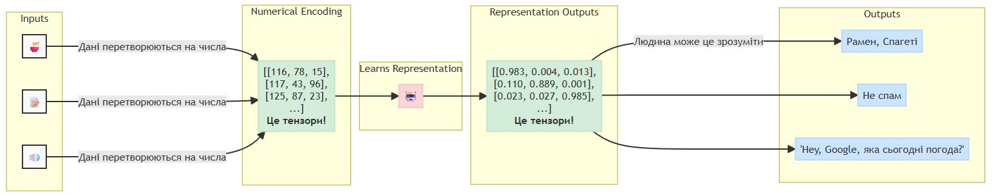
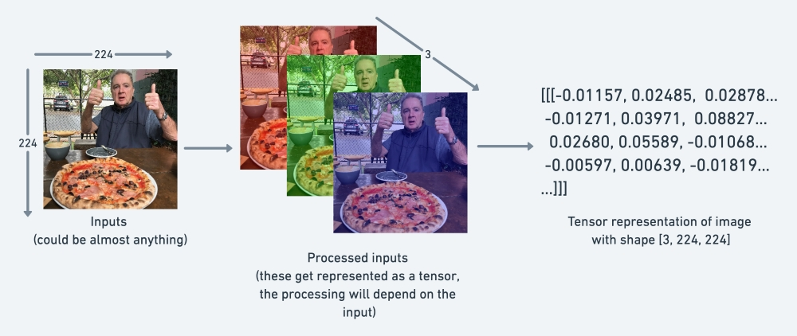

2.0.1+cu118
TrueОснови 🔥PyTorch
Технології комп’ютерного зору
Ігор Мірошниченко
КНУ імені Тараса Шевченка, ФІТ
Вступ
Що таке PyTorch?
- Один з найбільш популярних фреймворків для глибокого навчання, розроблений Facebook (Meta).
- User-friendly код для глибокого навчання на Python (з можливістю запуску на GPU/GPUs)
- Доступ до багатьох готових моделей глибокого навчання (Torch Hub/torchvision.models)
- Повний стек: попередня обробка даних, моделювання даних, розгортання моделі у вашій програмі/хмарі
- Спочатку розроблений і використовуваний внутрішньо компанією Facebook/Meta (зараз є відкритим кодом і використовується такими компаніями, як Tesla, Microsoft, OpenAI)
Чому PyTorch?
Що таке GPU/TPU?

GPU (Graphics Processing Unit)

TPU (Tensor Processing Unit)

Що таке тензор? 1/2
Що таке тензор? 2/2
Вступ до 🔥PyTorch
Встановлення 🔥PyTorch
- Відвідайте сайт PyTorch: Get Started для отримання інструкцій щодо встановлення.
- Виберіть вашу операційну систему, пакетний менеджер та версію CUDA (якщо ви плануєте використовувати GPU).
- Скопіюйте команду встановлення та виконайте її у вашому терміналі.
Імпорт PyTorch
Створення тензора: скаляр
Скаляр — це одне число, а в термінології тензорів — це тензор нульового рангу.
Створення тензора: вектор
Вектор — це послідовність чисел, а в термінології тензорів — це тензор першого рангу.
vector = torch.tensor([1, 2, 3])
print(vector)
print(f'Ранг тензора: {vector.ndim}')
print(f'Розмір тензора: {vector.shape}')tensor([1, 2, 3], device='cuda:0')
Ранг тензора: 1
Розмір тензора: torch.Size([3])Ранг тензора можна визначити за кількістю дужок [
Створення тензора: матриця
Матриця — це таблиця чисел, а в термінології тензорів — це тензор другого рангу.
Створення тензора: тензор 😅

Генератор випадкових величин
Тензори можуть бути створені з випадковими значеннями за допомогою функції torch.rand (рівномірний розподіл) або torch.randn (нормальний розподіл) з параметром size.
Нульовий та одиничний тензор
(tensor([[0., 0., 0., 0.],
[0., 0., 0., 0.],
[0., 0., 0., 0.]], device='cuda:0'),
torch.float32)Послідовність
torch.arange(start, end, step)
(tensor([0, 2, 4, 6, 8], device='cuda:0'), torch.int64)torch.range() є застарілим варіантом
Іноді може знадобитися один тензор певного типу з такою самою формою, як інший тензор.
Типи даних
У PyTorch доступно багато різних типів даних тензора.
Найпопулярніші:
torch.float32: за замовчуванням для чисел з плаваючою комоюtorch.float64: подвоєна точністьtorch.float16: напівточністьtorch.int64: цілі числаtorch.uint8: беззнакові цілі числа
dtype: тип даних тензораdevice: пристрій, на якому розміщено тензорrequires_grad: чи потрібно відстежувати градієнти для цього тензора
Інформація про тензор
shape: форма тензораdtype: тип даних тензораdevice: пристрій, на якому розміщено тензорrequires_grad: чи потрібно відстежувати градієнти для цього тензора
torch.manual_seed(73)
torch.set_default_device("cuda" if torch.cuda.is_available() else "cpu")
some_tensor = torch.rand(3, 4)
print(some_tensor)
print(f"Форма тензора: {some_tensor.shape}")
print(f"Тип даних тензора: {some_tensor.dtype}")
print(f"Пристрій тензора: {some_tensor.device}")
print(f"Відстеження градієнтів: {some_tensor.requires_grad}")tensor([[0.1272, 0.6051, 0.3567, 0.0610],
[0.3286, 0.2315, 0.3107, 0.8532],
[0.1143, 0.1669, 0.5057, 0.3978]], device='cuda:0')
Форма тензора: torch.Size([3, 4])
Тип даних тензора: torch.float32
Пристрій тензора: cuda:0
Відстеження градієнтів: FalseАрифметика з тензорами 1/2
Арифметика з тензорами 2/2
torch.add(tensor, 10)torch.sub(tensor, 10)torch.mul(tensor, 10)torch.div(tensor, 10)
Множення матриць
Одна з найпопулярніших операцій ML та DL.
Використовується метод torch.matmul()1 або оператор @.
Важливо
- Внутрішні розміри повинні збігатися:
(3, 2) @ (3, 2)не спрацює(2, 3) @ (3, 2)спрацює(3, 2) @ (2, 3)спрацює
- Результуюча матриця має форму зовнішніх розмірів:
(2, 3) @ (3, 2)->(2, 2)(3, 2) @ (2, 3)->(3, 3)
Різниця між * та torch.matmul()
| Операція | Код | Розрахунок |
|---|---|---|
| Множення елементів | tensor * tensor |
[1*1, 2*2, 3*3] = [1, 4, 9] |
| Множення матриць | tensor.matmul(tensor) |
[1*1 + 2*2 + 3*3] = [14] |
Метод torch.matmul() швидший за *
CPU times: total: 0 ns
Wall time: 1.08 mstensor(14., device='cuda:0')Найпоширеніша помилка 1/2
tensor_A = torch.tensor([[1, 2],
[3, 4],
[5, 6]], dtype=torch.float32)
tensor_B = torch.tensor([[7, 10],
[8, 11],
[9, 12]], dtype=torch.float32)
torch.matmul(tensor_A, tensor_B)--------------------------------------------------------------------------- RuntimeError Traceback (most recent call last) Cell In[43], line 9 1 tensor_A = torch.tensor([[1, 2], 2 [3, 4], 3 [5, 6]], dtype=torch.float32) 5 tensor_B = torch.tensor([[7, 10], 6 [8, 11], 7 [9, 12]], dtype=torch.float32) ----> 9 torch.matmul(tensor_A, tensor_B) File C:\Python\Python311\Lib\site-packages\torch\utils\_device.py:62, in DeviceContext.__torch_function__(self, func, types, args, kwargs) 60 if func in _device_constructors() and kwargs.get('device') is None: 61 kwargs['device'] = self.device ---> 62 return func(*args, **kwargs) RuntimeError: mat1 and mat2 shapes cannot be multiplied (3x2 and 3x2)
Найпоширеніша помилка 2/2
tensor.T: транспонування тензора
min, max, mean, sum…
torch.manual_seed(73)
tensor = torch.rand(10)
print(f"Мінімум: {torch.min(tensor)}")
print(f"Максимум: {torch.max(tensor)}")
print(f"Середнє: {torch.mean(tensor)}")
print(f"Сума: {torch.sum(tensor)}")Мінімум: 0.061036042869091034
Максимум: 0.8531807065010071
Середнє: 0.31552621722221375
Сума: 3.155261993408203Позиційний min та max
torch.argmax(): повертає індекс максимального значенняtorch.argmin(): повертає індекс мінімального значення
Зміна типів даних
Якщо один тензор знаходиться torch.float64, а інший — torch.float32, можуть виникнути деякі помилки. Але це легко виправити:
tensor = tensor.to(torch.float32)tensor = tensor.type(torch.float32)
tensor_32 = torch.rand(10)
print(f"Початковий тип: {tensor_32.dtype}")
tensor_64 = tensor_32.to(torch.float64)
print(f"Новий тип: {tensor_64.dtype}")
tensor_16 = tensor_32.type(torch.float16)
print(f"Новий тип: {tensor_16.dtype}")Початковий тип: torch.float32
Новий тип: torch.float64
Новий тип: torch.float16Reshaping
Stacking
tensor_A = torch.rand(10)
tensor_B = torch.rand(10)
# Вертикальне об'єднання
stacked_v = torch.vstack((tensor_A, tensor_B))
print(f"Складена форма (вертикально): {stacked_v.shape}")
# Горизонтальне об'єднання
stacked_h = torch.hstack((tensor_A, tensor_B))
print(f"Складена форма (горизонтально): {stacked_h.shape}")Складена форма (вертикально): torch.Size([2, 10])
Складена форма (горизонтально): torch.Size([20])Індексація
Перша квадратна дужка:
tensor([[1, 2, 3],
[4, 5, 6],
[7, 8, 9]], device='cuda:0')
Друга квадратна дужка: tensor([1, 2, 3], device='cuda:0')
Третя квадратна дужка: 1Тензори PyTorch та NumPy
torch.from_numpy(ndarray): масив NumPy -> тензор PyTorch.torch.Tensor.numpy(): тензор PyTorch -> масив NumPy.
Дякую за увагу!